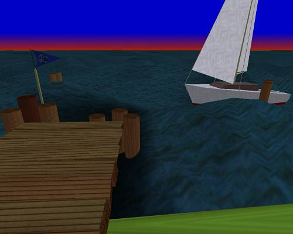
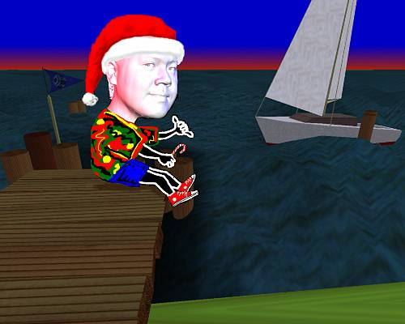

"Sittin' on the Dock of the Bay..."
(Christmas 1992)
Orange Peels & Digital Zits....

"Sittin' on the Dock of the Bay..."
(Christmas 1992)
Orange Peels & Digital Zits....
Around every Christmas time of the year, I will commission myself to produce a Christmas greeting card to send to my family and friends. This was my first attempt at it.
Again, I had no idea what the concept would be... all I had was a CyberHead 3D scan of myself that I got when the Grateful Dead came to the SGI campus and had their skulls zapped! I guess it's kinda like cooking in college (and I'm sure for a lot of us even post-college)... where you've got all these ingredients but you don't know what you're gonna git when you put them all together.
So I proceeded to light the model with Inventor SceneViewer. Notice those cute little spotlight manipulators. There were a total of 3 light sources as I lit the subject using standard studio photography techniques. A primary light from the camera viewpoint (headlight in Inventor-speak), a blue hair-light coming from the upper left, and a red rim-light coming from the right. The 2 secondary light sources were both Inventor spotlights.
I used Creative License and just started freehanding a santa's hat on myself. Notice the painted-in eyeballs. Cyberware scanners cannot pick up the geometry of your pupil (thank God!)... and so they had to be painted in.
Cyberware scanning works by using a laser beam to scan a stationary subject as it revolves around it. Geometry, registration, and texture map information are generated from this, and once composited, you've got a 3D head of yourself, warts and all! .... plus some digital zits thrown in there due to noise.
So in this piece, I'm just using the geometry information. You should be thankful that I'm not subjecting you to the texture map of my head scan. It looks rather gross, almost like someone rolled me over with a steam-roller and flattened my entire face on the pavement. Another example could be like peeling an orange... but I won't get into that. If you're extremely curious, you can see what Ed McCracken (SGI's CEO) looks like as an orange peel.
Embellishment was added and who can forget those trademark red "Connies."
The backdrop that I chose for this card is from one of IRIS Performer's earliest demos called lake. It was a cool little demonstration showing Peformer's real-time vis-sim performance. Imagine the lake would be undulating in a sinusoidal fashion as the water threatens to engulf the dwinky sailboat and the unsuspecting tourist from the Great White North, mistakingly flashing an Aloha gesture. Oh well, this is virtual reality.

 The final composite was done in Creative License all without alpha channels (since I didn't feel like reading the manuals) ... and special effects like the snowy frosty frame was added. It was time to sign the piece and send them off.
Merry Christmas!
Aloha from the Great White North


{kind=link}
{kind=link}
{kind=link}
{kind=link}